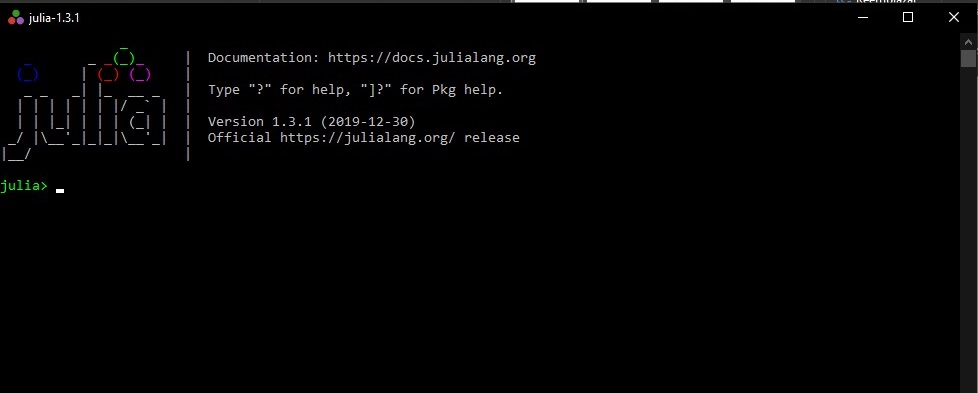
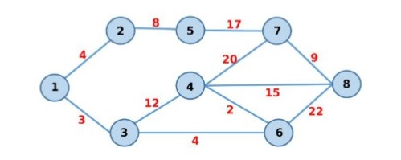
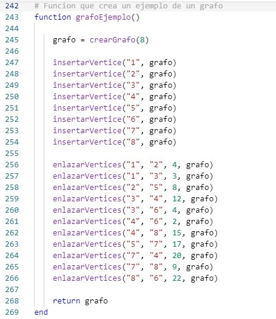
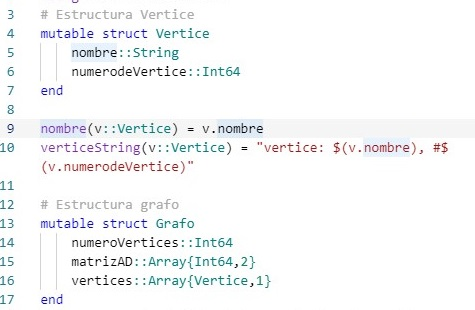

Programa de ejemplo
Grafo JuliaEl lenguaje de programación Julia ha sido diseñado para disponer de las ventajas de un lenguaje dinámico con el rendimiento de un lenguaje compilado. Esto se consigue en parte gracias a la utilización de un compilador JIT (just-in-time) basado en LLVM (Low Level Virtual Machine) que permite generar código máquina nativo.
Para la escritura de código, se puede utilizar cualquier editor de texto, existen entornos de desarrollo (IDE) que actúan como extensiones de editores de texto, un ejemplo es Juno el cual es un IDE que puede instalarse mediante el editor de código Atom. Para ejecutarlo existen alternativas, eso sí ya tienes instalado julia en tu computador, de no ser así te invito a ver Instalacion Julia. Una de ellas es tener instalado el compilador de Julia, luego instalar las extensiones de un editor de código como Atom o Visual Studio Code y ejecutarlo directamente desde las terminales de estos editores de código. Otra opción es abrir el compilador julia
E insertar la ruta del archivo usando la siguiente sintaxis:
Include("Ruta/ carpeta 1/archivo.jl ")
Con esto el programa empezará su ejecución dentro de la misma ventana.
Para evitar fallos o simplemente no se ve a la tarea de instalar Julia, les dejo un compilador Online el cual puede ver por completo el código y ejecutarlo.
Pero primero veremos de que se tratá el programa
El problema es el siguiente:
Desarrollar un programa que calcule la distancia más corta entre dos nodos de un grafo. El programa recibirá como entrada la especificación de un grafo (nodos y enlaces con peso, el nodo inicial y el nodo final). La salida del programa será la lista de nodos desde el inicial hasta el final y el peso de ese camino que debe ser el mínimo. Por ejemplo, supongamos el siguiente grafo, donde el nodo inicial es 1 y el final es 8:
La ruta más corta es 1, 3, 6, 4, 8 con un peso de 24. Se puede resolver el problema implementando el Algoritmo de Dijkstra.
Para generar un grafo, solo necesita:
1. Generar un nuevo grafo con un máximo de vertices
2. Agregar los vertices que necesites dependiento sin pasarse del máximo de vertices
3. Enlazar los vertices con sus respectivos pesos
Luego de esto usted podrá usar la opción de >encontrar recorrido más corto
Cabe destacar que el programa ya viene con un grafo de ejemplo, esta función se encarga de generarlos
El siguiente es el programa de ejemplo, solo necesita presionar ejecutar y el programa se iniciará, mostrandole un pequeño menu en el cual tendrá que seleccionar una opción
Las estructuras utilizadas
Para la implementación de este problema se utilizó los tipos de datos
Struct
El cual se emplea para representar las estructuras de Vertice y Grafo
Ya que esta estructura nos permite agrupar otros tipos, como en el caso de Grafo, el cual agrupa:
un Array de dimensión 2, para representar una matriz de adyacencia, que nos servirá para representar un grafo
un entero que nos sirve para conocer el numero de vertices que el grafo tiene actualmente
un array de dimensión 1 que nos sirve para almacenar los vertices de un grafo
métodos
funciones
métodos